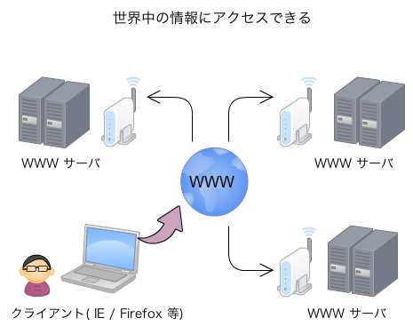

Ruby on Rails 基礎 - 琉球大学大学院 情報工学実践IV
Web アプリケーションとは - Ruby on Rails 基礎
目次
- はじめに
- WWW の基礎知識
- HTML 構文
- Web アプリケーション
- アプリケーションフレームワーク
はじめに
ここでは，Ruby on Rails の使い方を学ぶ前に，前提となる知識の理解を深める。
インターネットの仕組みや，Web サイトを作成する上で必要となる HTML の技術，Web 上
で動くソフトウェアに関する基礎知識を学ぶ。
WWW の基礎知識
【参考リンク】
WWW (ワールドワイドウェブのイメージ)

WWW のしくみ
Web サイト作成に関する技術
- HTML/XHTML
- JavaScript
- CSS
HTML 構文
【参考リンク】
Web アプリケーション
【参考リンク】
アプリケーションフレームワーク
【参考リンク】